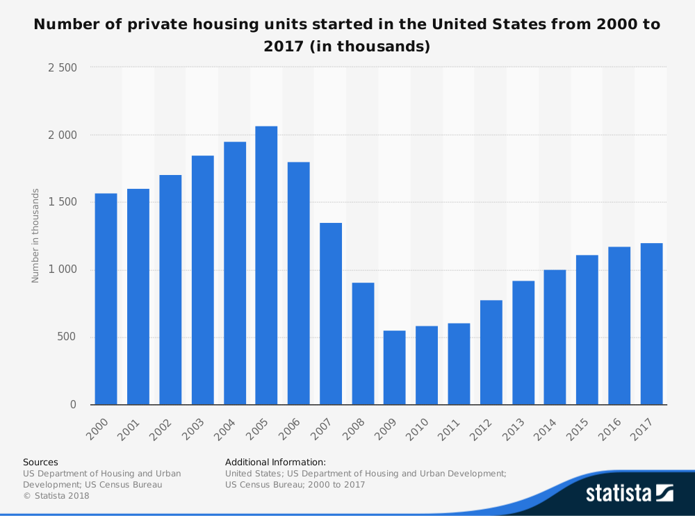

Question:
Should Zillow charge New Construction communities a flat price per Community or per Lead Received?
Recommendations:
-
From the provided market info and research data, Charge per Lead Received strategy brings more listings on the site and
generates more revenue in the long term, thus it's the optimal strategy under this scenario.
-
To make the prediction model more robust and accurate, more granular communty data should be collected based on location, seasons, price range, etc. With more
data, we can even test the feasibility of mixture pricing model given different characteristics of each community.
-
To account for the variability among communties and within communities, Zillow can consider constructing price ladders for each strategy. This can render more reasonable ROI
for the builders and attract more communities to put listings on Zillow.
Opportunities and Limitations
The business opportunities for Zillow looks very promising:
According to the US Census Bureau, from year 2015-2017, there are 1111.8, 1174.3, 1202.1 thousands of new units built, which is 3.5% average growth rate.
Assume the average sizes of the communties stay the same, that means there will be roughly 41,500 total new construction communities for 2018.
That means there will be another 16,000(40%) communities that Zillow can win the business over.

In addition, the market research indicates that builters spend $3,500 on marketing on average per property, which means that if they spend all their marketing budgets on Zillow, it can afford them 87 leads.
Current average leads per community is much lower than 87, and that post opportunities for Zillow to offer features that compete with other marketing channels the communities spend their marketing budgets on.
However, there are some limitations with current model implementation:
6% MoM growth rate is over 100% on annual growth, which seems quite optimistic. In reality, the MoM growth rate can be lower especially when the economy and market is volatile and fluctuating.
Pricing strategy pick largely depends on the number of communities advertising on the site so a more realistic growth rate will be desirable.
Consumer behaviors can vary largely depending on locations and seasons. For example, at New York, much fewer people do home searches in winter compared to summer when the weather is snowy and cold.
On the other hand, consumers living in Florida with nice weather year round are probably affected less by the extreme weathers. Thus, with a general average MoM leads growth rate can impact the accuracy of our prediction.
One community can have multiple types of units for sale, such as single-family house, townhomes, condos or apartments. Different types of units will also be likely to have different range of prices.
For current charge per lead model, one rate doesn't reflect the potential economic return of each lead. If same amount of leads go through Zillow for a single-family house and a 1b1b apartment,
the builder will probably make more profit out of the single-family house but they will be paying the same amount of money under current charge per lead structure.